איך לוקחים טקסט קיים, מאמר, פסוק, שיר או הרצאה, וממחיזים אותו לסרטון יצירתי, אותנטי ומעורר מחשבה. במפגש עשינו את זה על כתבה ממגזין אפוק, ועברנו על כל תהליך העבודה, צעד אחר צעד.
היי לכולם,
במפגש עלתה שוב ושוב השאלה איך בדיוק נראה תהליך העבודה. אז בדף הזה הוא מוצג במלואו, על הסרטון של אפוק: חומרי הגלם האמיתיים, איפה ואיך כל אחד מהם נוצר, והכלים. את כל הפרומפטים ריכזתי במסמך נפרד, כדי שיהיה נוח להעתיק.
מה תמצאו בדף:
מה עשינו במפגש: העלאת סרטון ליוטיוב, בחירת טקסט, ותהליך העבודה
שלושה חלקים: הבסיס של העלאה ליוטיוב, בחירת טקסט, ותהליך היצירה עם הכלים הדיגיטליים.
1. העלאת סרטון ליוטיוב
עברנו צעד אחר צעד על הבסיס: מעלים מהמחשב או ישירות מהטלפון. ביוטיוב לוחצים על + או על Create ובוחרים העלאה. מוסיפים כותרת ותיאור, כתוביות, ותמונה ממוזערת שתופיע לפני שמנגנים. את כל השאר מנהלים ב-YouTube Studio.
התמקדנו בבחירת הטקסט, והדגמנו על כתבה ממגזין אפוק, על מחקר חדש בנושא אלצהיימר: איך מסמנים בה את המשפטים החשובים, ואיך מתמצתים כתבה ארוכה לסרטון של שתי דקות וחצי.
3. תהליך העבודה והכלים
שימוש ב-Claude: פתיחת פרויקט, מה זה פרומפט ואיך כותבים אותו, ועבודה עם Claude Code. ואחר כך כל תהליך היצירה של הסרטון, מהטקסט ועד הסרטון המוכן.
המשימה למפגש הבא
ליצור: להפוך את הטקסט שלכם לסרטון
בחרו טקסט: הרצאת המשנה שלכם, שיר שכתבתם, פסוק שמלווה אתכם. כל טקסט אמיתי ואישי מתאים. והפכו אותו לסרטון קצר, אותנטי ואישי.
הבסיס: סרטון של טקסט בלבד. המילים שלכם על המסך, בקצב שלכם, ואם תרצו גם עם הקול שלכם קורא אותן. איך עושים את זה
ומי שרוצה להמשיך: עוברים על שלבי התהליך, עם הפרומפטים מהמסמך. או לפחות פריים אחד, תמונה אחת שמחיזה משפט מהטקסט שלכם.
אפשר ליצור ב-Google Vids, כמו שלמדנו בתחילת הדרך, או ב-CapCut.
המטרה היא לא סרטון מושלם. המטרה היא לעבוד יותר יעיל, יותר יצירתי ויותר אותנטי, עם הכלים שכבר יש לנו.
בחירת הטקסט: כתבה ממגזין אפוק
הטקסט שבחרנו להדגמה: כתבה על מחקר חדש, שמציע שאולי האלצהיימר לא מתחיל במוח. כתבה ארוכה ועשירה, שצריך לזקק ממנה סרטון של שתי דקות וחצי.
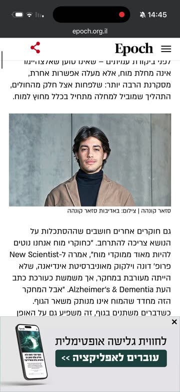
מגזין אפוק · רקפת תבור · אפריל 2026
שנים חיפשנו את האלצהיימר במוח. כעת, חוקרים מציעים שאולי הוא מתחיל במקום אחר
בשלב הזה עושים שני דברים: מתמצתים, כלומר כותבים במשפט אחד מה הרעיון המרכזי, ומסמנים את משפטי המפתח, אלה שיהפכו לתסריט ולתמונות. במסמך תמצאו את משפטי המפתח שסימנו, מסומנים בצהוב, ומה כל אחד מהם הפך להיות בסרטון.
לוקחים הרבה טקסט, ומזקקים ממנו את הרעיון המרכזי לסרטון של דקה או שתיים.
להמחיז
הופכים מילים לתמונות, לתנועה ולסאונד. הטקסט נשאר, ומקבל חוויה סביבו.
להתאים לזמן ולמקום
טקסט ישן יכול לדבר על היום. השאלה היא מה הוא אומר לנו עכשיו, ולמי.
הכלים: Claude, פרומפט, פרויקט ו-Claude Code
ארבעה מושגים שחוזרים לאורך כל התהליך.
מהו Claude?
עוזר בינה מלאכותית של חברת Anthropic. כותבים לו בשפה רגילה, בעברית, והוא קורא, מנתח, כותב, מתכנן ויוצר. בתהליך שלנו הוא שותף העבודה: מנתח את הכתבה, כותב את התסריט, ומנסח את הפרומפטים לשאר הכלים.
נכנסים ב-claude.ai, באתר או באפליקציה. יש גרסה חינמית, עם מגבלת שימוש.
מהו פרומפט?
ההנחיה שאנחנו נותנים לכלי. פרומפט טוב אומר מי הכלי בשיחה הזו, נותן לו את חומר הגלם וההקשר, ומבקש תוצר ברור. ולא חייבים להצליח בפעם הראשונה: זו שיחה, ומתקנים תוך כדי.
טיפ: אפשר לבקש מ-Claude לשאול אתכם שאלות לפני שהוא מתחיל, עד שיהיה לו מספיק מידע.
פתיחת פרויקט
פרויקט ב-Claude הוא מרחב עבודה לנושא אחד. מעלים אליו קבצים, למשל את הכתבה, וכותבים הוראות קבועות, למשל הקהל והטון. כל שיחה בפרויקט כבר יודעת את כל זה, ולא צריך להסביר מחדש.
בגרסה החינמית אפשר לפתוח עד חמישה פרויקטים.
עבודה עם Claude Code
הגרסה של Claude שעובדת ישירות על הקבצים במחשב: הוא פותח תיקייה, מריץ כלים, ובונה תוצרים. בסרטון של אפוק השתמשתי בו כדי להסיר את המסך הירוק, לחבר את כל החומרים ולתזמן את הכתוביות.
Claude Code כלול במנוי בתשלום (Pro ומעלה). את רוב השלבים אפשר לעשות גם בלעדיו, ב-CapCut.
הדוגמה מהמפגש
אפוק: מכתבה לרילס
הכתבה הפכה לסרטון אנכי לרשתות: אני מדבר מול המצלמה, ובין המשפטים נכנסים עשרה איורים בחוט אדום, שישה מהם מונפשים, ושלוש אינפוגרפיקות שמסבירות את הרעיון המדעי. בסוף, הזמנה לקרוא את הכתבה המלאה.
הטקסט הוא התסריט שלנו. במקרה של הדוגמה בכיתה, הכתבה ממגזין אפוק.
קוראים את הכתבה עד הסוף, ואז מתמצתים: מה הרעיון המרכזי, במשפט אחד. אחר כך מסמנים את משפטי המפתח, המשפטים שיהפכו לתסריט ולתמונות. כדאי לבדוק גם מה המקור של הכתבה: כאן התברר שהמחקר הוא פרה-פרינט, כלומר עוד לא עבר ביקורת עמיתים, וזה נכנס לסרטון כמשפט סייג.
כלל אצבע: אם מספר או טענה לא מופיעים בכתבה, הם לא מופיעים בסרטון.
2תסריט חזותי
מה שומעים, ומה רואים
לכל משפט בתסריט מחליטים מה רואים על המסך באותו רגע. לא כל משפט צריך תמונה: ברוב הזמן רואים את המגיש, ותמונה נכנסת רק כשהיא עוזרת להבין או להרגיש.
זמן
מה שומעים (הרעיון)
מה רואים
סוג השוט
0:00
מוזיקה ולוגו
פתיח: המוח הזוהר
פתיח מונפש
0:06
ההוק: מחלה יכולה להופיע במקום אחד ולהתחיל במקום אחר
אני, מול המצלמה
מגיש
0:21
אולי התהליך מתחיל מחוץ למוח
מוח מחוט וזכוכית מגדלת, מעי
איור
0:26
כמעט 86 אלף חולים, וחצי מיליון נבדקי ביקורת
מיקרוסקופ, והמספרים על המסך
איור ומספרים
0:35
באילו רקמות פעילים הגנים
סליל DNA מחוט, ואז אני
איור ומגיש
0:40
בתוך המוח: רק תאי המיקרוגליה
המוח, תחת זכוכית המגדלת
איור מונפש
0:47
מחוץ למוח: במעי, בריאות ובדם
מעי, ריאות, ואינפוגרפיקת רקמות החיץ
איור ואינפוגרפיקה
0:56
מערכת חיסון כמו אזעקה רגישה מדי
אזעקה, אינפוגרפיקת האזעקה התקולה, חתול חולף
איור מונפש ואינפוגרפיקה
1:10
ההשערה: מהגוף אל המוח
אינפוגרפיקת ההשערה, כלי דם, מחסום שנקרע
אינפוגרפיקה ואיור מונפש
1:21
שנים לפני שהזיכרון נפגע
איש מבוגר הולך בשביל
איור מונפש
1:27
סייג: המחקר טרם עבר ביקורת עמיתים
DNA, ואני עם כיתוב הסייג
איור ומגיש
1:38
מחקר נפרד על חיסון בגיל 65 ומעלה
אני, ואיש מבוגר בכורסה
מגיש ואיור מונפש
1:50
הזמנה לקרוא את הכתבה
אני, טלפון שגולל בכתבה, לוגו
סיום
הטבלה מתארת את הגרסה הסופית, באורך 2:08. לכל שורה עם איור כותבים תיאור קצר בעברית של מה רואים, ומתוכו Claude מנסח פרומפט תמונה באנגלית. במסמך יש פרומפט לכל אחד מהאיורים שבסרטון.
בדקתי שתי משפחות של תמונות, וכל אחת מוגדרת במשפט סגנון קבוע שנכנס בתחילת כל פרומפט. בגרסה הסופית בחרתי רק באיור בחוט אדום, כדי שכל הסרטון ידבר בשפה אחת, השפה של המגזין.
קולנועי, לעולם האמיתי (נבדק ולא נכנס)
חום, גרעיניות של פילם ועומק שדה רדוד. לאנשים, למעבדה ולדגמים.
החוקרת
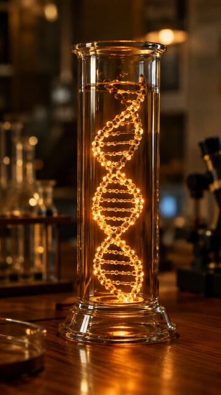
DNA
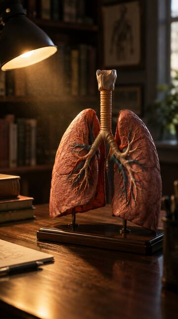
ריאות
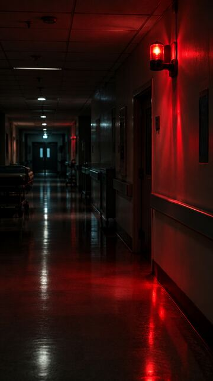
המסדרון
איור בחוט אדום (זה שנבחר)
אדום חלודה על נייר ירוק-מרווה, בהשראת השפה העריכתית של המגזין. לרעיונות שאין להם צילום.
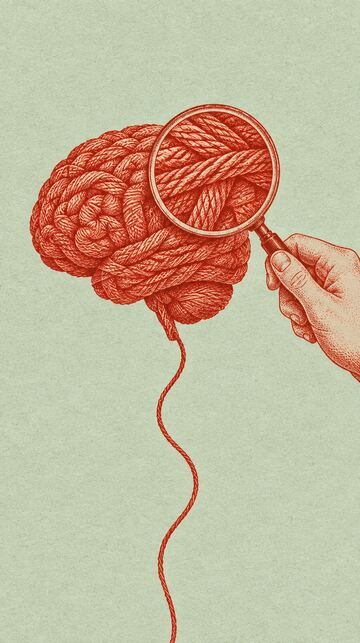
המוח
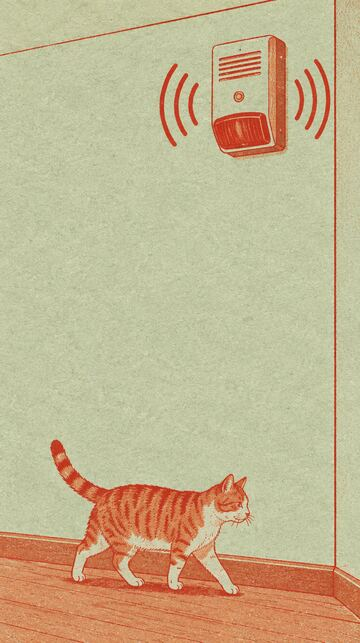
האזעקה
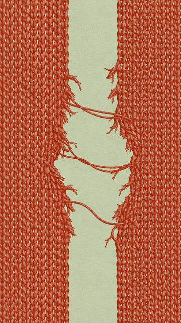
המחסום
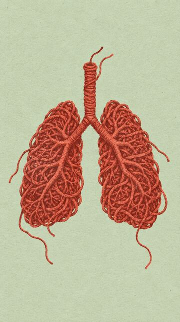
ריאות
למה דווקא חוט? חוט הוא חומר אחד שמחזיק את כל המטאפורות של הכתבה: משהו שנפרם, שנקרע, שמחבר בין איברים. פרט חוזר אחד, צבע או חומר, עושה לאחידות יותר מכל תיאור סגנון ארוך.
סטוריבורד הוא כמו קומיקס של הסרטון: שורה של פריימים לפי הסדר, ולכל פריים מה רואים ומה שומעים. הוא מאפשר לראות את כל הסרטון במבט אחד, ולתקן לפני שמשקיעים בצילום ובהנפשה.
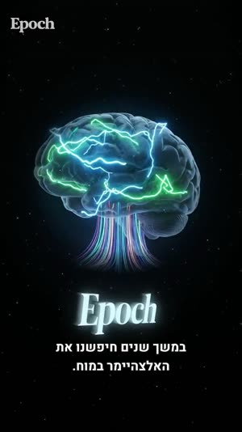
0:00פתיח: המוח הזוהר
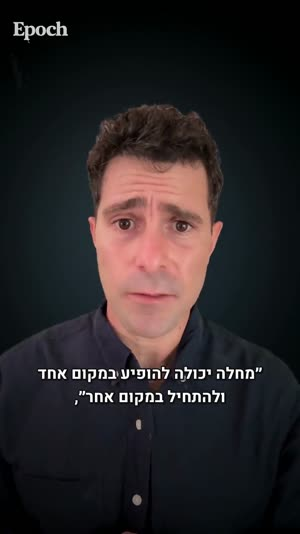
0:06אני, מול המצלמה
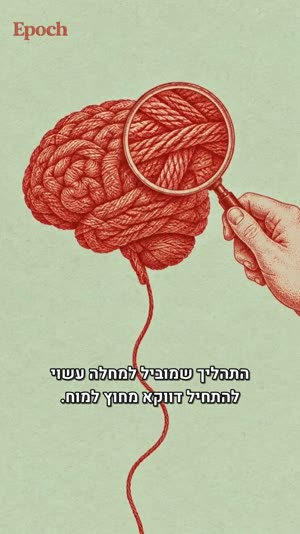
0:21מוח מחוט וזכוכית מגדלת
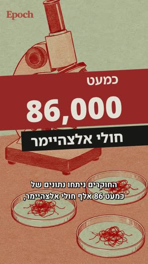
0:26מיקרוסקופ והמספרים
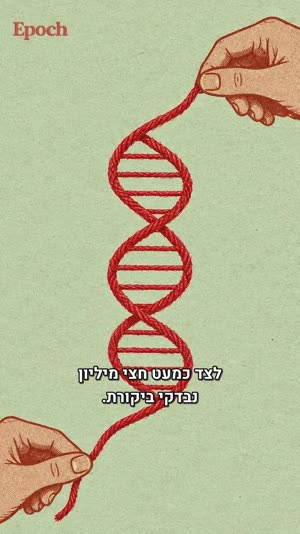
0:35סליל DNA מחוט
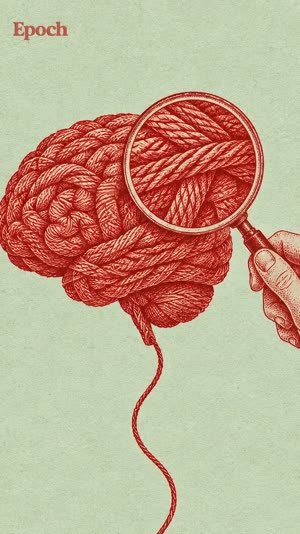
0:40המוח, מונפש
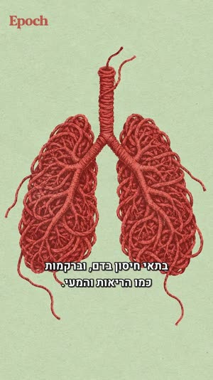
0:51ריאות0:52אינפוגרפיקה: רקמות חיץ
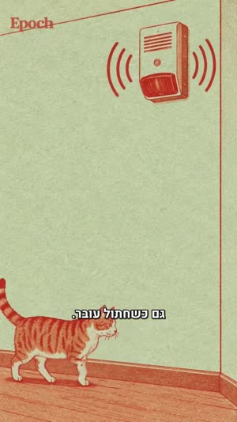
1:05אזעקה וחתול, מונפש
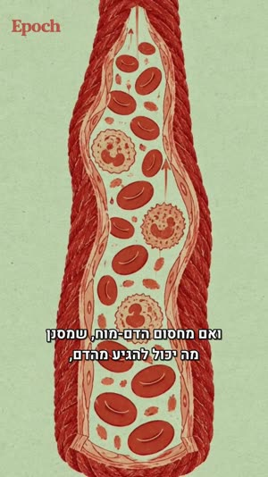
1:15כלי דם, מונפש
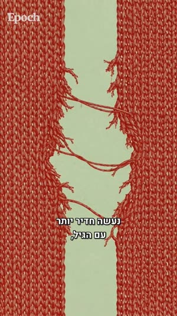
1:19מחסום שנקרע, מונפש
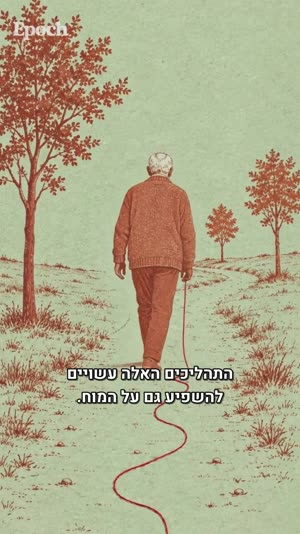
1:22איש בשביל, מונפש1:29סייג: טרם ביקורת עמיתים
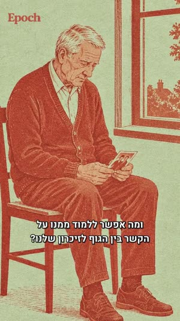
1:46איש בכורסה, מונפש
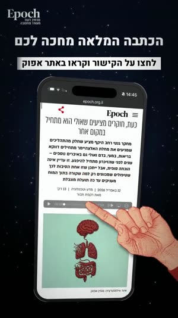
1:56טלפון וכתבה
את הפריימים יצרנו מהפרומפטים שבשלב 2, עם משפט הסגנון שבשלב 3. נוצרו עשרים תמונות, עשר בכל סגנון, ובגרסה הסופית נכנסו כל עשרת האיורים. אלה הם, לפי סדר ההופעה בסרטון:
מוח וזכוכית מגדלת
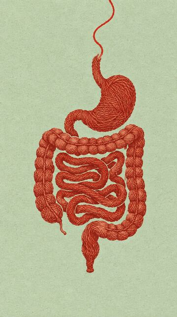
מעי
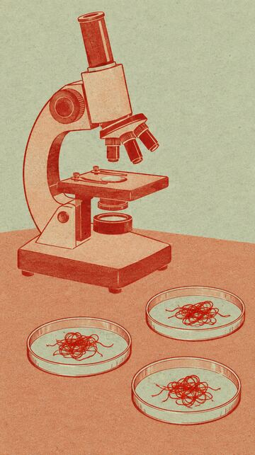
מיקרוסקופ
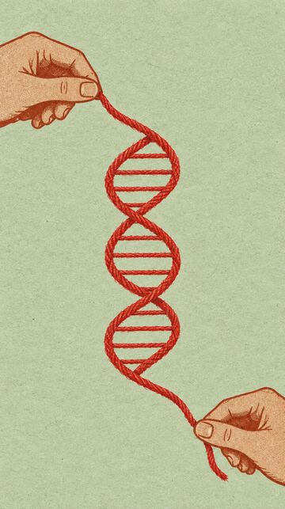
DNAריאותאזעקה וחתול
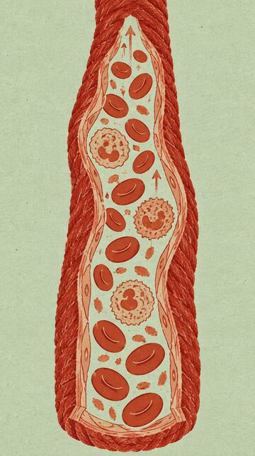
כלי דםהמחסום שנקרע
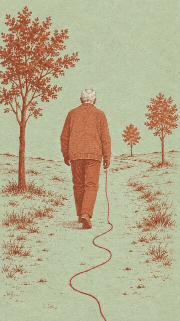
איש בשביל
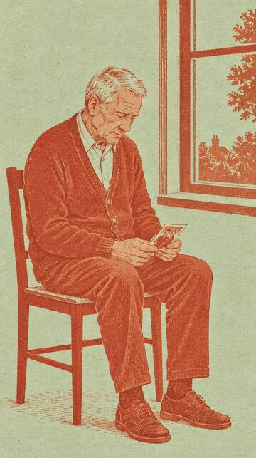
איש בכורסה
שלוש אינפוגרפיקות, ב-Perplexity
מהו Perplexity? מנוע חיפוש מבוסס בינה מלאכותית. שואלים שאלה בשפה רגילה, והוא מחפש ברשת ועונה בתשובה מסודרת, עם קישור למקור ליד כל טענה.
למה הוא טוב למחקר? כל טענה מגיעה עם מקור שאפשר לפתוח ולבדוק. המידע עדכני, מהרשת ולא רק ממה שהמודל למד. ואפשר להמשיך לשאול שאלות המשך עד שהנושא ברור. זה בדיוק מה שצריך כשמסבירים רעיון מדעי, ולא רוצים להטעות.
איך נוצרו האינפוגרפיקות? העליתי ל-Perplexity את המידע מהכתבה ואת התסריט התמציתי, צירפתי את האיורים שיצרתי, וביקשתי אינפוגרפיקה באותו סגנון. כך התקבלו שלוש ההדגמות שמסבירות את הרעיון המרכזי של הכתבה.
רק אחרי שהפריימים נבחרו, מנפישים. מעלים את התמונה, וכותבים פרומפט שמתאר רק מה זז, ושכל השאר נשאר במקום.
האזעקה: החתול חולףהמחסום: החוטים נעיםהשביל: האיש הולך
בגרסה הסופית שישה איורים מונפשים: המוח, האזעקה עם החתול, כלי הדם, המחסום שנקרע, האיש בשביל והאיש בכורסה. ארבעת האיורים האחרים נשארו תמונות עם תנועת מצלמה איטית בעריכה. ככה חוסכים קרדיטים, והתנועה מורגשת דווקא כי היא לא בכל שוט.
את הצילום העליתי ל-Claude, עם פרומפט קצר, והוא החליף את המסך הירוק ברקע כהה, בלי הילה ירוקה בשיער ובלי לפגוע בפנים.
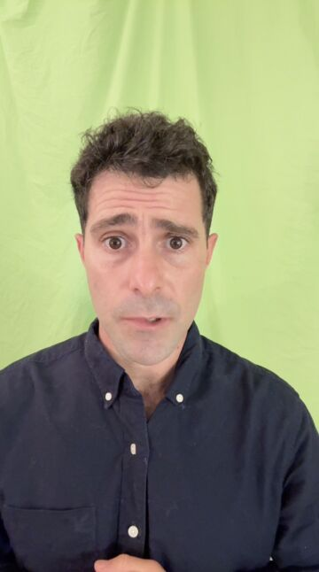
לפני
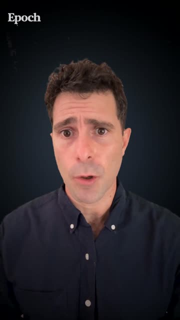
אחרי
צירפתי סרטון שצילמתי מול מסך ירוק. הסר את המסך הירוק והחלף אותו ברקע כחול-כהה אחיד. שמור על השיער והכתפיים בלי הילה ירוקה. לפני הרינדור המלא, הראה לי פריים אחד לבדיקה.
הבקשה האחרונה חשובה: בודקים פריים אחד לפני שמחכים לרינדור של כל הסרטון.
הקול שלי מעל, ומוזיקה שקטה מתחת. את המוזיקה יצרנו עם Claude מחובר לכלי מוזיקה. איך מחברים את Claude לאפליקציות נוספות? נדבר על זה במפגשים הבאים. עד אז, אפשר פשוט לשאול את Claude, והוא ינחה אתכם שלב אחר שלב.
45 השניות הראשונות של פס הקולקריינות ומוזיקה, כמו שנכנסו לסרטון
הקול: הקלטתי, ניקיתי רעשים והד, ואיזנתי את העוצמה. המוזיקה: שקטה, בלי שירה ובלי תופים חזקים, ויורדת בכל מקום שבו אני מדבר.
בסוף מחברים הכול: הצילום שלי, התמונות והקליפים המונפשים, המוזיקה, הפתיח והסיום. ומוסיפים כתוביות, עם Claude או בתוכנת עריכה.
את ההרכבה עשיתי עם Claude Code, לפי טבלת השוטים מהשלב השני. את אותו הדבר אפשר לעשות ידנית ב-CapCut: שכבה של הצילום, ומעליה התמונות בזמנים הנכונים.
הטעות שלימדה אותי הכי הרבה: בגרסה הראשונה הכתוביות תוזמנו לפי התסריט, ולא לפי מה שנאמר בצילום. התברר ששליש מהתסריט בכלל לא נאמר בטייק, וכל הכתוביות נבנו מחדש. הכלל: כתוביות נבנות תמיד ממה שנשמע, לא ממה שנכתב. המכונה יודעת מה תכננתי, רק אני יודע מה באמת אמרתי.
המספרים שקופצים על המסך, כיתוב הסייג וכותרת הסיום לא נוצרו בתוכנת עריכה. ביקשתי אותם מ-Claude, עם הסקיל Motion, שבונה כותרות וטקסט בתנועה מתוך תיאור במילים.
סקיל הוא חבילת הוראות שמלמדת את Claude לעשות סוג מסוים של עבודה היטב. כאן תיארתי לו מה כתוב בכל כותרת, מתי היא נכנסת, ובאיזה סגנון: אותם צבעים של אפוק, אדום על שחור ולבן, וכניסה קצרה וחדה. הוא החזיר קטעי וידאו מוכנים, שנכנסו לעריכה כמו כל שוט אחר.
לא חייבים תמונות כדי ליצור סרטון חזק. לפעמים המילים לבדן הן החוויה: משפט שמופיע לאט על מסך שקט, מילה אחת שנשארת, ושקט שמאפשר לה לחלחל. זו הדרך הכי ישירה להפוך טקסט אישי לסרטון אותנטי ואישי.
1. מזקקים
בוחרים את המשפטים החזקים. 8 עד 12 משפטים מספיקים לסרטון של דקה או שתיים.
2. מחליטים מה על המסך
לפעמים מספיקה מילת מפתח אחת, כשהקול אומר את השאר. רקע אחד, פונט אחד, צבע אחד.
3. נותנים קצב
מקליטים את עצמכם קוראים, ומתזמנים כל משפט לקול. או בלי קול, עם מוזיקה שקטה ומספיק זמן לקרוא.